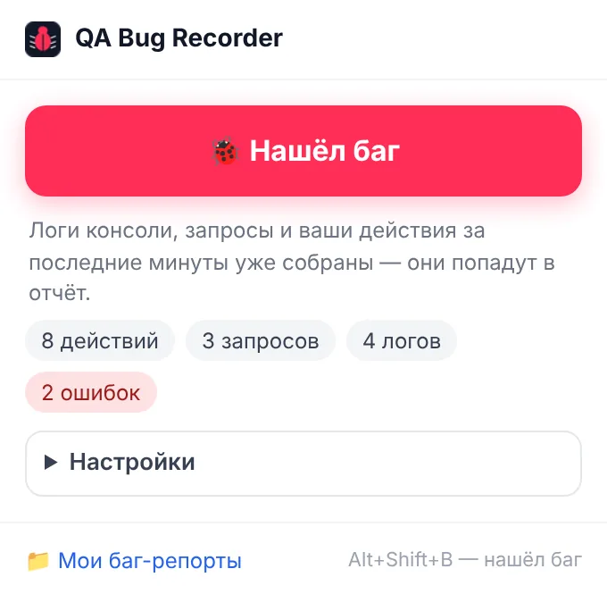
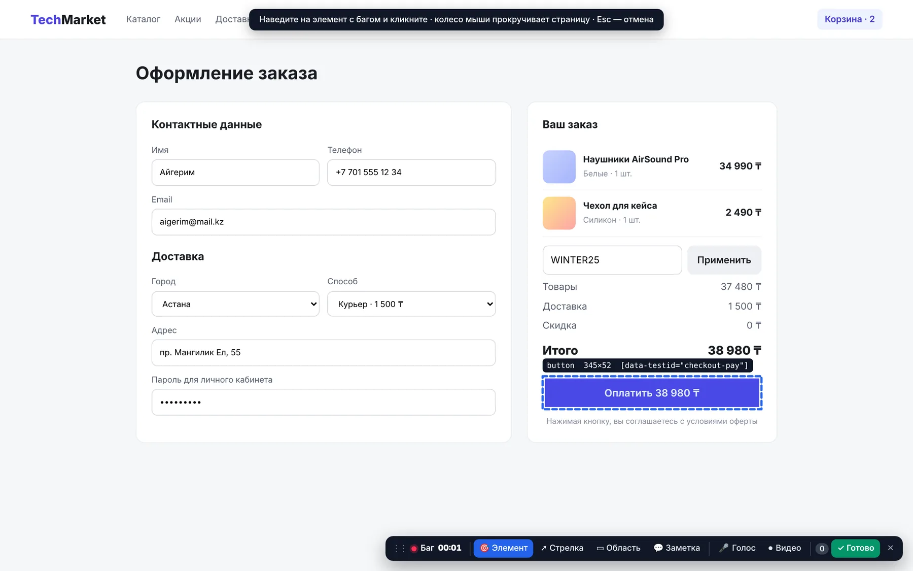

⏪
Буфер «задним числом»
До 15 минут логов, запросов и действий до нажатия кнопки. Баг уже случился, но данные есть.
Ткните в сломанный элемент, нарисуйте стрелку или просто наговорите голосом. Логи консоли, сетевые запросы и ваши шаги расширение уже собрало. Готовый отчёт выгружается в Word, Markdown или HTML.

Тестировщик видит баг за секунду, а потом тратит 15 минут на скриншоты, копирование логов и вспоминание шагов. Разработчик получает отчёт без контекста и тратит ещё час.
Шаги восстанавливаются по памяти, половина теряется.
Клики, ввод и переходы пишутся сами. Шаги воспроизведения собираются автоматически.
Непонятно, на что смотреть и какая это кнопка в коде.
Стрелка, рамка и комментарий прямо на скриншоте плюс CSS-селектор, HTML и стили элемента.
Ошибка уже случилась, консоль очищена, запрос не повторить.
Консоль и сеть за последние 5 минут уже в буфере, включая то, что произошло до нажатия кнопки.
Расширение тихо держит в памяти последние минуты работы: логи консоли и ошибки JS, запросы fetch/XHR с телами ответов, клики, ввод и переходы. Ничего нажимать не нужно, ничего никуда не отправляется.

Нажмите «🐞 Нашёл баг» или Alt+Shift+B. Поверх сайта появится панель:

Нажмите «✓ Готово». Откроется отчёт: шаги воспроизведения уже собраны, остаётся вписать название и ожидаемый результат. Дальше одна кнопка: Word, Markdown, HTML, HAR или всё одним архивом.

До 15 минут логов, запросов и действий до нажатия кнопки. Баг уже случился, но данные есть.
CSS-селектор с приоритетом data-testid, текст, размеры, вычисленные стили и фрагмент HTML.
Стрелка, рамка, нумерация и комментарий нарисованы прямо на картинке.
Запись с микрофона параллельно с остальным: отдельным файлом и в звуковой дорожке видео.
Включается в любой момент. Клик по времени пометки перематывает видео к этому моменту.
«Ввод в поле Email», «Клик: Оплатить», «Переход на /checkout»: шаги собираются из реальных действий.
console.*, необработанные исключения, отклонённые промисы, незагруженные ресурсы.
Метод, статус, время, заголовки, тела запроса и ответа. HAR открывается в DevTools → Network → Import.
Пароли не пишутся вовсе. Authorization, cookie, токены в URL и JSON скрываются при экспорте.
Все отчёты хранятся локально. К любому можно вернуться, дописать и выгрузить заново.
Нашёл баг, выбрать элемент, стрелка, готово: без мыши и без лишних кликов.
По желанию: полный захват сети с картинками, скриптами, CORS-ошибками и предупреждениями браузера.
Это настоящие скриншоты отчёта, снятые на тестовом магазине. Переключайте вкладки.

Для заказчика и документации. Заголовки, таблицы окружения, консоли и сети, скриншоты.
Для GitLab, GitHub, Jira, Notion. Архив: report.md, папка со скриншотами, медиа, HAR.
Один файл, открывается в любом браузере. Видео и голос встраиваются внутрь.
Для разработчика: импорт в DevTools, Charles, Fiddler или Postman.
Word + HTML + Markdown + скриншоты + видео + голос + HAR + console.log. Прикрепил к задаче, и готово.
Меньше рутины, больше найденных багов. Отчёт без «а что ты нажимал?».
Селектор, стек ошибки, тело ответа сервера и HAR сразу в задаче.
Приёмочное тестирование: даже не-технический человек отправит понятный отчёт голосом и стрелкой.
Расширение не имеет сервера и ничего не отправляет в интернет. Всё хранится локально в браузере (IndexedDB) и покидает его, только когда вы сами скачиваете отчёт. Значения полей паролей, карт и токенов не записываются вовсе, а заголовки авторизации и cookie по умолчанию скрываются при экспорте.
chrome://extensions и справа вверху включите «Режим разработчика».qa-bug-recorder.| Alt+Shift+B | Нашёл баг |
| Alt+Shift+E | Выбрать элемент |
| Alt+Shift+A | Стрелка |
| Alt+Shift+S | Готово, открыть отчёт |
| Ctrl+Enter | Сохранить пометку |
| Esc | Отменить инструмент |
Переназначить: chrome://extensions/shortcuts
Нет. Перехват консоли и запросов — это лёгкие обёртки над стандартными функциями, данные отправляются пачками раз в секунду. Видео пишется только когда вы его включили.
Сбор начинается с загрузки страницы. После установки расширения обновите вкладку сайта (F5). На служебных страницах chrome:// и в магазине расширений Chrome запрещает работу расширений.
Chrome разрешает записывать вкладку только после явного действия пользователя. Если вы начали баг через иконку или горячую клавишу, видео включается с панели на странице. Если после этого был переход на другую страницу, нажмите иконку → «⏺ Видео».
При первом нажатии 🎤 откроется вкладка с запросом доступа к микрофону: это нужно один раз. Голос записывается отдельным файлом и подмешивается в видео, если оно включено.
Режим через DevTools-протокол: записывает все ресурсы (картинки, скрипты, стили), CORS-ошибки и предупреждения браузера. Chrome при этом показывает полосу «Расширение отлаживает этот браузер», это нормально. Включается в настройках расширения.
WebM (VP9/VP8 + Opus). Открывается в Chrome, Firefox, VLC, плеерах Windows 10+ и macOS 13+. В Word видео не встраивается: используйте HTML или архив.
Да, в любом браузере на Chromium версии 116 и новее. Установка такая же, через страницу расширений и режим разработчика.
Есть идея или нашли баг в самом расширении? Создайте issue на GitHub.